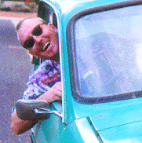

stephen@cbr.dit.csiro.au
http://www.cmis.csiro.au/STEPHEN.Barrass/
http://www.iastate.edu/~CYBERSTACKS/Wave.htm
After graduating form the University of NSW with a Bachelor of Electrical
Engineering in 1987 several of us formed a small company that built and
sold voice operated environments for quadriplegics. This led to an interest
in human-computer interaction and subsequent work as a software engineer in
the visualisation and human-computer interaction program at the
Commonwealth Scientific and Industrial Research Organisation.
I am currently completing a Ph.D. on auditory information design at
the Australian National University.